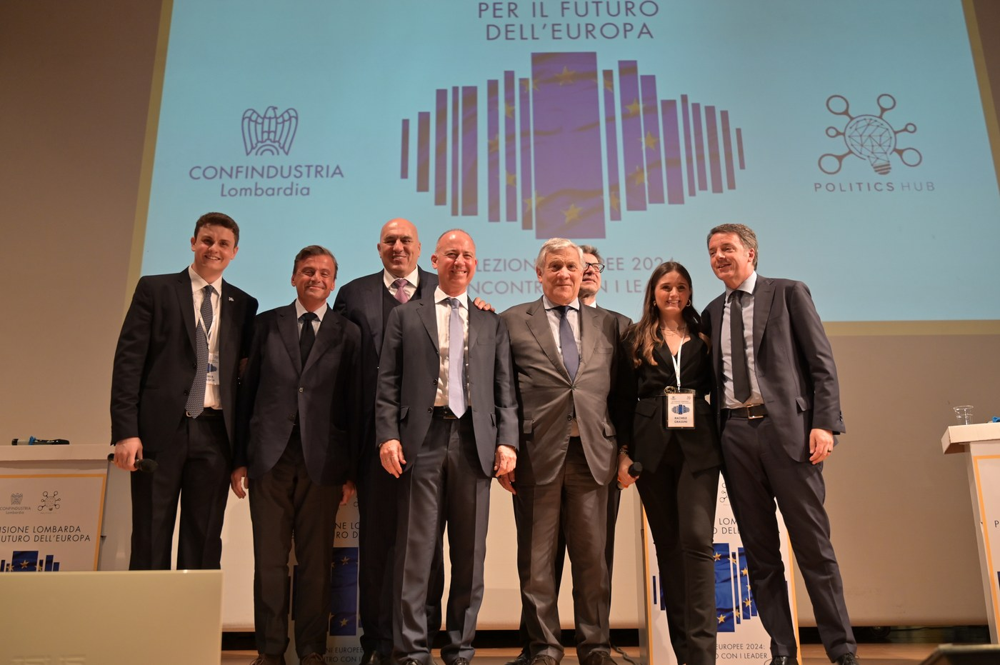
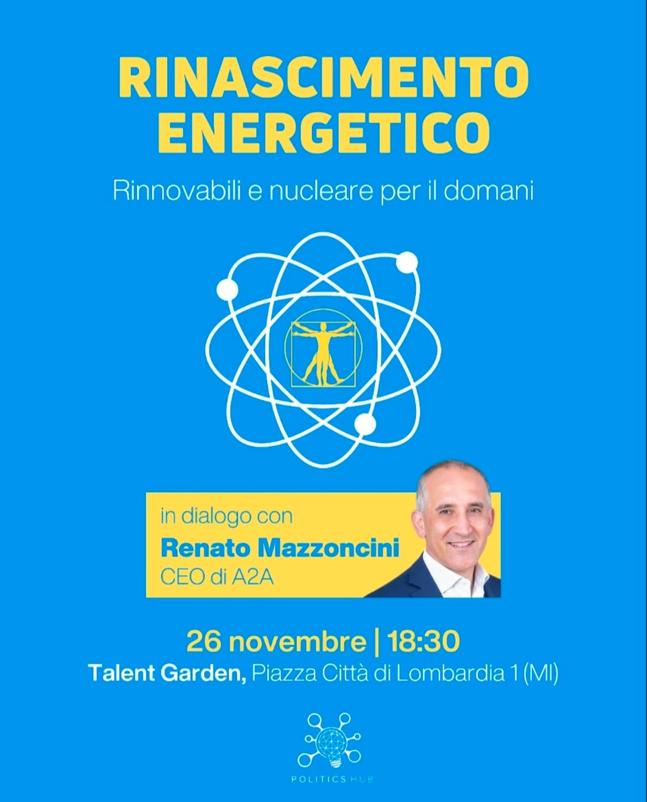
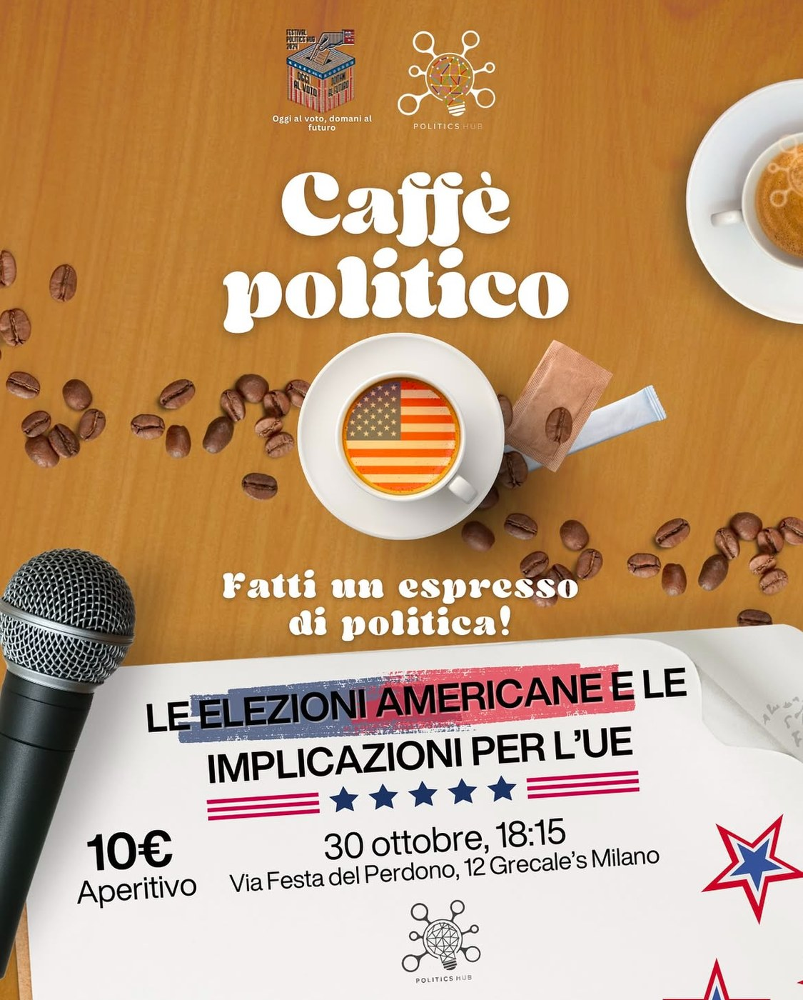

Damos voz a las ideas de la próxima generación.
Sesenta estudiantes que acercan a los jóvenes a la política con espíritu crítico: encuentros, debates y eventos con protagonistas de la escena local e internacional. No somos un partido ni hacemos campaña electoral — damos valor a las ideas, no a las banderas.
Nuestra red toma forma…
Creamos espacios de diálogo, sin afiliaciones.
Acercamos a los jóvenes a la política como conocimiento y debate: un lugar para escuchar, comprender y hacerse oír, libre de lógicas de partido.
Encuentros y debates
Ponemos a protagonistas de la política, la economía y la sociedad en diálogo directo con los jóvenes.
Nuestros eventosEspacios de diálogo
Del Caffè Politico a las grandes conferencias: lugares informales y abiertos donde nacen preguntas, no respuestas prefabricadas.
Caffè PoliticoProyectos y periodismo
De Il Poligono a Dirección Europa: iniciativas que forman ciudadanos críticos e informados.
Todos los proyectosPolitics Hub no es un partido. No apoyamos a candidatos ni hacemos campaña electoral. Creemos que la política, antes de ser una elección partidista, es conocimiento, escucha y responsabilidad.
— de nuestro manifiesto
Sesenta estudiantes, un único punto de encuentro.
Somos una red de estudiantes unidos por la necesidad de hablar de política de una forma nueva. Cada nodo es una persona, un evento, una idea: descubre lo que nos une.
Una comunidad que crece desde 2019.
Revive nuestros eventos pasados.
Debates, encuentros y análisis con protagonistas de la escena local e internacional.

La visión lombarda para el futuro de Europa
Un debate sobre cómo reforzar la influencia global de Europa: reformas de defensa, inversiones estratégicas y política exterior.
Leer la crónica (en italiano)
Renacimiento energético
Los retos y las oportunidades de un futuro energético sostenible, y las estrategias para la transición.
Leer la crónica (en italiano)
Las elecciones estadounidenses
Un retrato de las elecciones del 5 de noviembre: la victoria de Trump, el voto desde el extranjero, las esperanzas y la distancia emocional.
Leer la crónica (en italiano)